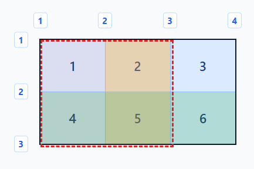
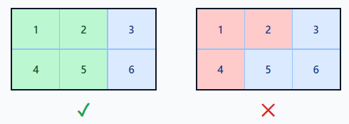
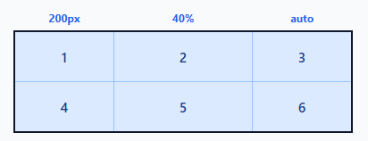
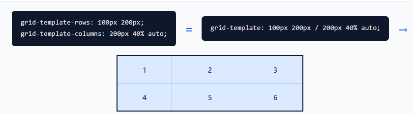
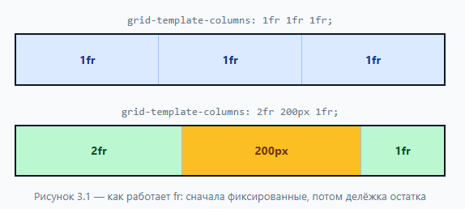
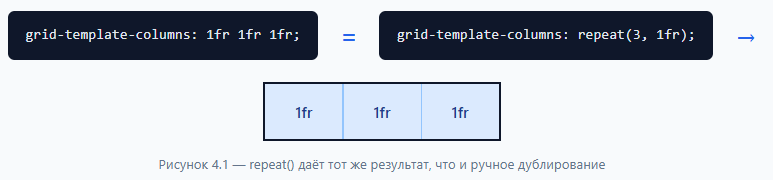
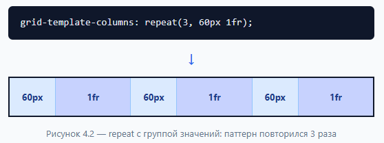

CSS Grid (сетка) — двумерная система раскладки. Управляет одновременно строками и колонками.
Обычный блок, которому задали display: grid. Все ПРЯМЫЕ потомки становятся грид-элементами и начинают подчиняться правилам сетки. Снаружи контейнер ведёт себя как обычный блочный элемент.
.grid { display: grid; }
.grid-inline { display: inline-grid; }
Любой прямой ребёнок грид-контейнера. Автоматически становится ячейкой сетки.
Разделительная линия, формирующая структуру. Идёт по обе стороны от каждой колонки и каждого ряда. Бывает вертикальная (между колонками) и горизонтальная (между рядами).
ВАЖНО: линий ВСЕГДА на одну больше, чем колонок (или рядов).
Линии автоматически нумеруются, начиная с 1. Слева направо и сверху вниз. Линиям можно давать свои имена.
Пространство между двумя соседними линиями. Проще говоря — одна колонка или один ряд. Когда пишешь grid-template-columns: 200px 1fr auto — ты задаёшь ТРИ трека.
Пересечение одного ряда и одной колонки. Самая маленькая единица сетки. Каждый обычный элемент по умолчанию занимает ровно одну ячейку.
Одна или несколько ячеек, ограниченных четырьмя линиями. ЖЕЛЕЗНОЕ ПРАВИЛО: область всегда ПРЯМОУГОЛЬНИК. Нельзя сделать область в форме буквы «Г» или «L» — браузер проигнорирует.


grid-template-columns — количество и ширина колонок. Значения через пробел. Сколько значений — столько колонок.
grid-template-columns: 200px 40% auto; /* 3 колонки */ grid-template-columns: 100px 100px 100px; /* 3 колонки по 100px */
grid-template-rows — количество и высота рядов. Синтаксис тот же.
grid-template-rows: 100px 200px; /* 2 ряда */
Любые единицы измерения: px, %, em, rem, vh, vw и т.д.
Объединяет rows и columns в одну строку. Сначала ряды, потом слэш, потом колонки.
grid-template: 100px 200px / 200px 40% auto; /* ↑ ряды ↑ колонки */


fr = fraction (доля). Появилась специально для Grid. Отвечает за СВОБОДНОЕ пространство внутри контейнера.
ВАЖНО: fr считается ПОСЛЕ того, как размещены фиксированные размеры (px, %, auto). Т.е. сначала браузер выделяет 400px под колонку с 400px, а уже остаток делит между колонками с fr.
grid-template-columns: 1fr 1fr 1fr; /* 3 равные колонки */ grid-template-columns: 2fr 400px 1fr; /* сначала 400px, потом 2:1 */

Избавляет от дублирования однотипных значений. Первый аргумент — сколько раз повторить. Второй аргумент — что повторить.
grid-template-columns: 1fr 1fr 1fr; /* длинно если придётся создавать больше стобцов */ grid-template-columns: repeat(3, 1fr); /* коротко */
Можно повторять группы значений:
grid-template-columns: repeat(3, 100px 1fr); /* 100px 1fr 100px 1fr 100px 1fr */

